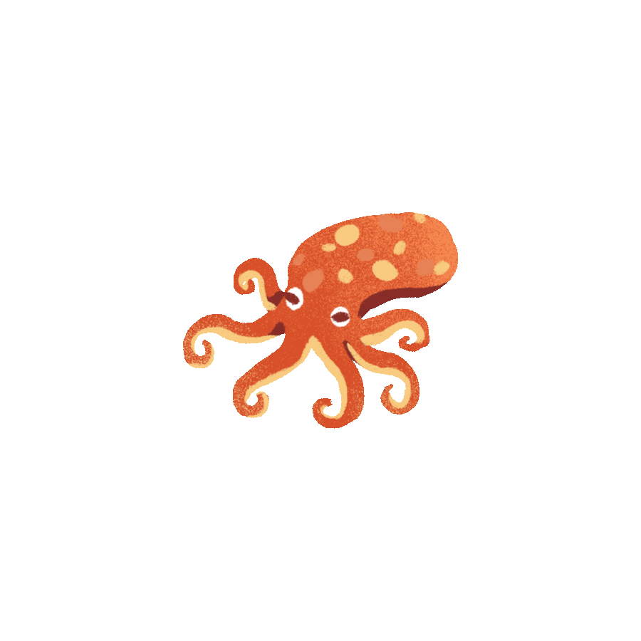

ข้อปฏิบัติสำหรับชาวประมงและนักเดินเรือ
1. นำไปเฉพาะสิ่งของเครื่องใช้ที่จำเป็น
2. ไม่ใช้ระเบิดหรือสารพิษในการจับปลา
3. ไม่ใช้อวนตาถี่ในการจับปลา
4. ไม่ควรจับปลาขนาดเล็กซึ่งมีส่วน สำคัญในระบบนิเวศ
5. เลี่ยงการทอดสมอบนเเนวปะการัง
6. ใช้ทุ่นผูกเรือแทนการทิ้งสมอเรือลงในเเนวปะการัง
7. ไม่ทิ้งของเสียลงทะเล ให้นำขยะมาทิ้งที่ฝั่ง

\ปะการังหลอด.gif)

\ปะการังดอกไม้.gif)

\ฟองน้ำ.gif)